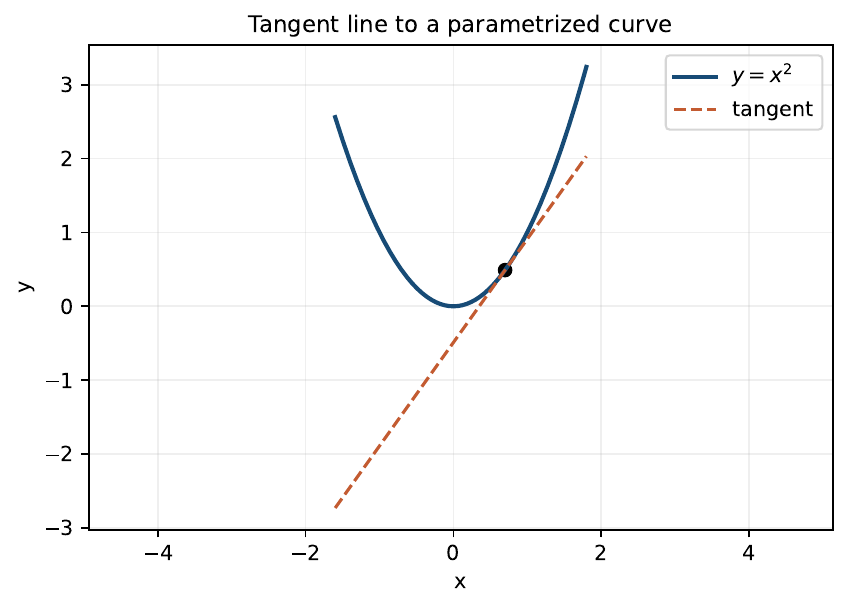
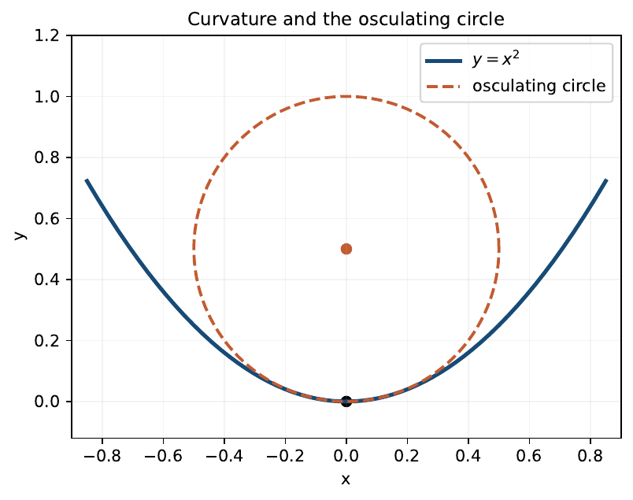
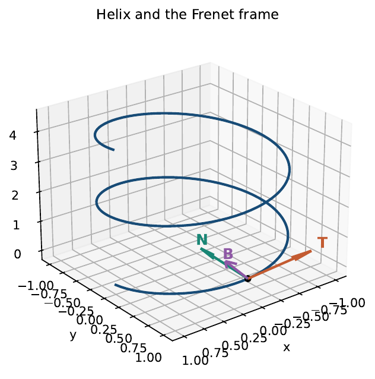
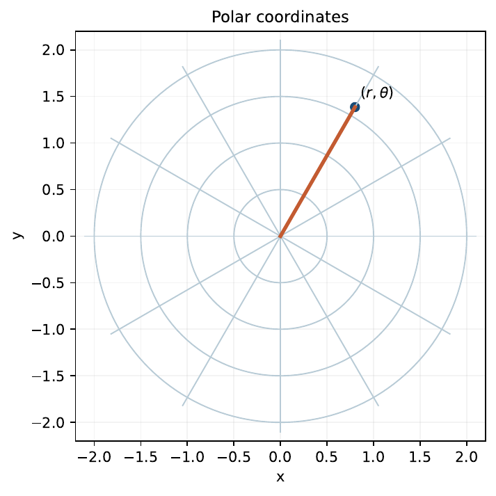
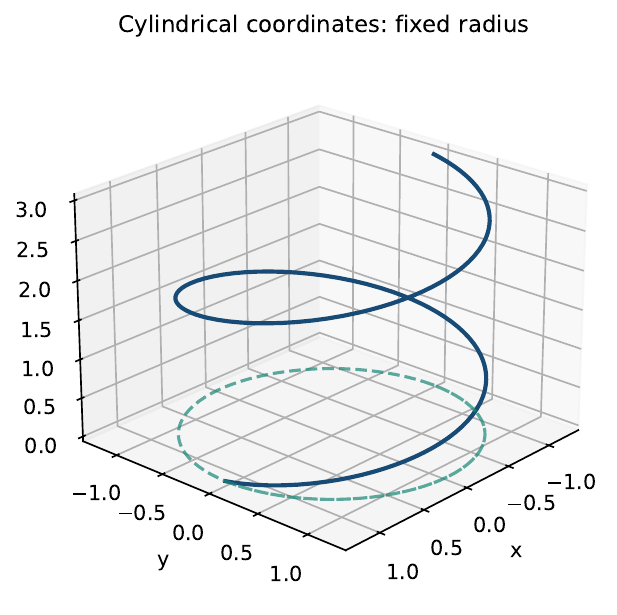
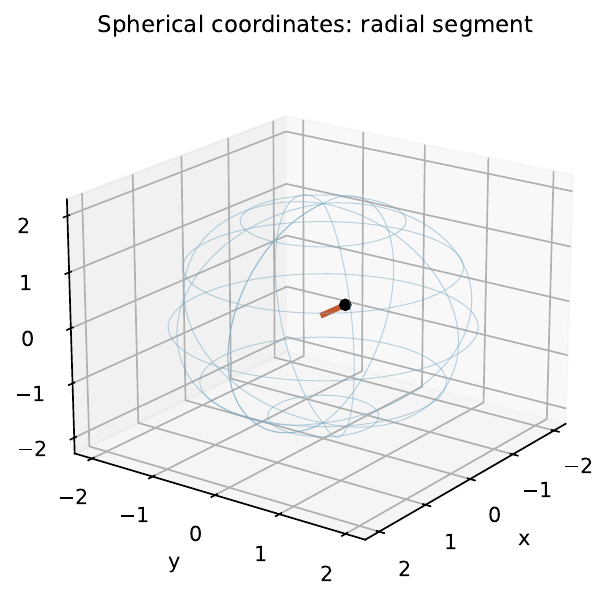
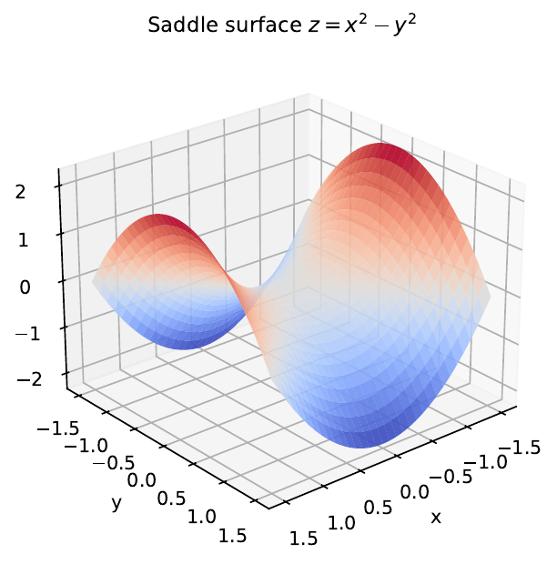
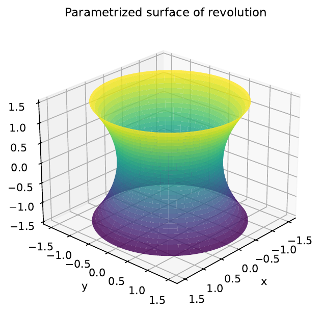

2. Curves, Surfaces, and Coordinate Systems
Learning. After studying this chapter, you should be able to parametrize planar and spatial curves; compute velocity, acceleration, arc length, and curvature; construct the Frenet frame and torsion; transform among Cartesian, polar, cylindrical, and spherical coordinates; describe and parametrize surfaces; compute tangent planes and surface-area elements; and solve representative problems using R and Python with reproducible visualizations.
Interactive investigation: Rotatable surfaces
Compare a saddle and a paraboloid by changing the viewing angle and surface parameter.
Explore: Which surface has a local minimum at the origin?
Geometry through parameters
A Cartesian equation describes a geometric object by a relation among coordinates. A parametrization instead specifies how to generate its points from one or more independent parameters. This distinction is essential: a curve is a one-dimensional object, but it may live in a two- or three-dimensional ambient space; a surface typically requires two parameters. The parameter can represent time, position along a curve, or simply a convenient mathematical coordinate.
Definition — Parametrized curve. A parametrized curve in \(\mathbb{R}^n\) is a function \(\boldsymbol{r}:I\to\mathbb{R}^n\) on an interval \(I\), written \(\boldsymbol{r}(t)=(r_1(t),\ldots,r_n(t))\). Its trace is the set \(\{\boldsymbol{r}(t):t\in I\}\). The parameter orientation is the direction in which the trace is traversed as \(t\) increases.
A curve and its trace are not the same thing. For example, \((\cos t,\sin t)\) for \(0\le t\le2\pi\) traverses the unit circle once, whereas \((\cos2t,\sin2t)\) traverses it twice. Their traces coincide, but their velocities and parameter-dependent integrals need not.
Example — Three ways to describe a parabola. The graph \(y=x^2\) admits \(\boldsymbol{r}(t)=(t,t^2)\), \(t\in\mathbb{R}\). It also admits \(\boldsymbol{q}(s)=(s^3,s^6)\), \(s\in\mathbb{R}\). Both have the same trace, but \(\boldsymbol{q}'(0)=\boldsymbol{0}\), so \(s=0\) is not a regular parameter value. This illustrates why parameter speed matters even when the geometric locus is unchanged.
Computational preview: constructing a curve
Remark — Computational follow-up. The R and Python implementations of this example appear in the paired computational laboratories later in the chapter.
Differentiation, tangent vectors, and motion
If the component functions are differentiable, the derivative of a vector-valued function is computed componentwise: \[\boldsymbol{r}'(t)=\lim_{h\to0}\frac{\boldsymbol{r}(t+h)-\boldsymbol{r}(t)}{h} =(r_1'(t),\ldots,r_n'(t)).\] When \(t\) is time, \(\boldsymbol{v}=\boldsymbol{r}'\) is velocity, \(\left\lVert \boldsymbol{v}\right\rVert\) is speed, and \(\boldsymbol{a}=\boldsymbol{r}''\) is acceleration. A parameter value is regular if \(\boldsymbol{r}'(t)\ne\boldsymbol{0}\). At a regular point the tangent line is \[\boldsymbol{L}(s)=\boldsymbol{r}(t_0)+s\boldsymbol{r}'(t_0),\qquad s\in\mathbb{R}.\] The tangent direction is unaffected by a smooth, orientation-preserving change of parameter, although the magnitude of the derivative changes.
Example — Tangent line to a parabola. For \(\boldsymbol{r}(t)=(t,t^2)\) at \(t_0=0.7\), \(\boldsymbol{r}(0.7)=(0.7,0.49)\) and \(\boldsymbol{r}'(0.7)=(1,1.4)\). Thus \(\boldsymbol{L}(s)=(0.7,0.49)+s(1,1.4)\); equivalently, \(y-0.49=1.4(x-0.7)\).

Proposition — Differentiation rules. For differentiable vector functions \(\boldsymbol{r},\boldsymbol{s}\) and a differentiable scalar \(f\), the rules \[(f\boldsymbol{r})'=f'\boldsymbol{r}+f\boldsymbol{r}',\qquad (\boldsymbol{r}\cdot\boldsymbol{s})'=\boldsymbol{r}'\cdot\boldsymbol{s}+\boldsymbol{r}\cdot\boldsymbol{s}',\] and, in \(\mathbb{R}^3\), \[(\boldsymbol{r}\times\boldsymbol{s})'=\boldsymbol{r}'\times\boldsymbol{s}+\boldsymbol{r}\times\boldsymbol{s}'\] hold componentwise.
Proof. For the dot product, expand \(\sum_i r_i(t)s_i(t)\) and apply the ordinary product rule to each term. The scalar product and cross product identities follow from bilinearity and the same limit argument.
Tangential and normal acceleration
Write \(v=\left\lVert \boldsymbol{r}'\right\rVert\) and \(\boldsymbol{T}=\boldsymbol{r}'/v\) where \(v>0\). Since \(\boldsymbol{r}'=v\boldsymbol{T}\), \[\boldsymbol{a}=v'\boldsymbol{T}+v\boldsymbol{T}'.\] Differentiating \(\boldsymbol{T}\cdot\boldsymbol{T}=1\) gives \(\boldsymbol{T}\cdot\boldsymbol{T}'=0\). Therefore the two terms above are orthogonal. The tangential acceleration \(a_T=v'\) changes speed; the normal acceleration \(a_N=\left\lVert v\boldsymbol{T}'\right\rVert\) changes direction. Later we will show \(a_N=\kappa v^2\).
Example — Circular motion. For \(\boldsymbol{r}(t)=(R\cos\omega t,R\sin\omega t)\) with \(R>0\) and constant \(\omega\), velocity is \(R\omega(-\sin\omega t,\cos\omega t)\) and acceleration is \(-R\omega^2(\cos\omega t,\sin\omega t)\). The speed is \(R|\omega|\), the tangential acceleration is zero, and the normal acceleration has magnitude \(R\omega^2\).
Arc length and unit-speed parametrization
The distance between successive sample points approximates a curve’s length by polygonal segments. For a continuously differentiable curve, passing to the limit gives
Definition — Arc length. If \(\boldsymbol{r}:[a,b]\to\mathbb{R}^n\) is piecewise continuously differentiable, its length is \[L=\int_a^b\left\lVert \boldsymbol{r}'(t)\right\rVert\,\,\mathrm{d}t.\] The arc length measured from \(t=a\) is \(s(t)=\int_a^t\left\lVert \boldsymbol{r}'(u)\right\rVert\,\,\mathrm{d}u\).
When \(\left\lVert \boldsymbol{r}'\right\rVert>0\), \(\,\mathrm{d}s/\,\mathrm{d}t=\left\lVert \boldsymbol{r}'\right\rVert\); using \(s\) as the parameter produces a unit-speed curve, \(\left\lVert \,\mathrm{d}\boldsymbol{r}/\,\mathrm{d}s\right\rVert=1\).
Example — Length of a helix. Let \(\boldsymbol{r}(t)=(a\cos t,a\sin t,bt)\) for \(0\le t\le2\pi\), with \(a>0\). Since \(\boldsymbol{r}'=(-a\sin t,a\cos t,b)\), its speed is the constant \(\sqrt{a^2+b^2}\) and \[L=2\pi\sqrt{a^2+b^2}.\] The quantity \(2\pi b\) is the vertical change over one revolution, while \(2\pi a\) is the corresponding circumference in the horizontal plane.
Example — Arc length of a parabola segment. For \(\boldsymbol{r}(t)=(t,t^2)\), \(0\le t\le1\), \[L=\int_0^1\sqrt{1+4t^2}\,\,\mathrm{d}t =\frac{\sqrt5}{2}+\frac{\operatorname{arsinh}(2)}4.\] The substitution \(u=2t\) and the standard antiderivative \(\int\sqrt{1+u^2}\,\,\mathrm{d}u=\tfrac12(u\sqrt{1+u^2}+\operatorname{arsinh}u)\) produce the exact answer.
Remark — Computational follow-up. The R and Python implementations of this example appear in the paired computational laboratories later in the chapter.
Checkpoint. Why does replacing \(\boldsymbol{r}(t)\) by \(\boldsymbol{r}(3t)\) change its speed but not the length of a fixed geometric arc, provided the parameter interval is adjusted accordingly?
Curvature and the geometry of bending
Curvature measures the rate at which the unit tangent changes per unit distance along a curve. For a regular twice-differentiable curve, define \[\kappa=\left\lVert \frac{\,\mathrm{d}\boldsymbol{T}}{\,\mathrm{d}s}\right\rVert.\] Using \(\,\mathrm{d}s/\,\mathrm{d}t=\left\lVert \boldsymbol{r}'\right\rVert\) and the chain rule yields \[\kappa(t)=\frac{\left\lVert \boldsymbol{T}'(t)\right\rVert}{\left\lVert \boldsymbol{r}'(t)\right\rVert}.\] In the plane, for \(\boldsymbol{r}(t)=(x(t),y(t))\), an equivalent computational formula is \[\boxed{\kappa(t)=\frac{|x'y''-y'x''|}{(x'^2+y'^2)^{3/2}}}.\] In three dimensions, provided \(\boldsymbol{r}'\ne0\), \[\boxed{\kappa(t)=\frac{\left\lVert \boldsymbol{r}'(t)\times\boldsymbol{r}''(t)\right\rVert}{\left\lVert \boldsymbol{r}'(t)\right\rVert^3}}.\] The cross product measures the part of acceleration perpendicular to velocity; this is precisely the part that changes the direction of motion.
Proposition — Curvature of a graph. For the graph \(y=f(x)\), parametrized by \(\boldsymbol{r}(x)=(x,f(x))\), the curvature is \[\kappa(x)=\frac{|f''(x)|}{\bigl(1+[f'(x)]^2\bigr)^{3/2}}.\]
Proof. Substitute \(x'=1\), \(y'=f'\), \(x''=0\), and \(y''=f''\) into the planar formula.
Example — Osculating circle of a parabola. For \(y=x^2\), \(\kappa(x)=2/(1+4x^2)^{3/2}\). At the origin, \(\kappa=2\), so the radius of curvature is \(\rho=1/\kappa=1/2\). The upward unit normal is \((0,1)\); therefore the osculating circle has center \((0,1/2)\) and equation \[x^2+(y-\tfrac12)^2=\tfrac14.\]

The Frenet frame and torsion
For a sufficiently smooth regular space curve with \(\kappa>0\), define the unit tangent \(\boldsymbol{T}\), principal unit normal \(\boldsymbol{N}=(\,\mathrm{d}\boldsymbol{T}/\,\mathrm{d}s)/\kappa\), and binormal \(\boldsymbol{B}=\boldsymbol{T}\times\boldsymbol{N}\). These form an orthonormal frame that moves along the curve. The Frenet–Serret equations, with derivatives taken with respect to arc length, are \[\frac{\,\mathrm{d}\boldsymbol{T}}{\,\mathrm{d}s}=\kappa\boldsymbol{N},\qquad \frac{\,\mathrm{d}\boldsymbol{N}}{\,\mathrm{d}s}=-\kappa\boldsymbol{T}+\tau\boldsymbol{B},\qquad \frac{\,\mathrm{d}\boldsymbol{B}}{\,\mathrm{d}s}=-\tau\boldsymbol{N}.\] The scalar \(\tau\) is torsion; it measures the rotation of the osculating plane along the curve. When \(\boldsymbol{r}'\times\boldsymbol{r}''\ne\boldsymbol{0}\), \[\boxed{\tau(t)=\frac{(\boldsymbol{r}'\times\boldsymbol{r}'')\cdot\boldsymbol{r}'''}{\left\lVert \boldsymbol{r}'\times\boldsymbol{r}''\right\rVert^2}}.\] For a planar curve, torsion vanishes wherever this formula is defined.
Example — Curvature and torsion of a circular helix. For \(\boldsymbol{r}(t)=(a\cos t,a\sin t,bt)\), differentiate three times. Direct substitution gives \[\kappa=\frac{a}{a^2+b^2},\qquad \tau=\frac{b}{a^2+b^2}.\] Both are constant. The circle \(b=0\) has torsion zero; increasing \(|b|\) introduces twisting out of the horizontal plane.

Computational preview: symbolic verification
Remark — Computational follow-up. The R and Python implementations of this example appear in the paired computational laboratories later in the chapter.
Polar coordinates and planar geometry
Polar coordinates describe a point by radial distance \(r\ge0\) and angle \(\theta\) from the positive \(x\)-axis: \[x=r\cos\theta,\qquad y=r\sin\theta,\qquad r=\sqrt{x^2+y^2}.\] Angles are not unique: \(\theta\) and \(\theta+2\pi k\) describe the same ray. At the origin, the angle is undefined. A polar curve is often written \(r=f(\theta)\), and a Cartesian parametrization follows immediately: \[\boldsymbol{r}(\theta)=\bigl(f(\theta)\cos\theta,f(\theta)\sin\theta\bigr).\]

Proposition — Arc length in polar form. If \(r=f(\theta)\) is continuously differentiable on \([\alpha,\beta]\), then \[L=\int_\alpha^\beta\sqrt{[f(\theta)]^2+[f'(\theta)]^2}\,\,\mathrm{d}\theta.\]
Proof. Differentiate \((f\cos\theta,f\sin\theta)\); the squared norm is \((f'\cos\theta-f\sin\theta)^2+(f'\sin\theta+f\cos\theta)^2=(f')^2+f^2\).
Example — Archimedean spiral. For \(r=c\theta\) with \(c>0\) and \(0\le\theta\le2\pi\), the arc length is \[L=c\int_0^{2\pi}\sqrt{1+\theta^2}\,\,\mathrm{d}\theta.\] The radius increases linearly with angle, while the spacing between successive turns remains constant at \(2\pi c\).
Polar area
The area swept out by a thin polar sector of angular width \(\Delta\theta\) and radius \(r\) is approximately \(\frac12r^2\Delta\theta\). Taking a limit gives \[A=\frac12\int_\alpha^\beta [f(\theta)]^2\,\,\mathrm{d}\theta,\] provided the region is traced without overlapping interiors. This is a geometric area formula, distinct from the polar Jacobian \(r\) used for double integration in Chapter 5.
Example — Area of a cardioid. For \(r=1+\cos\theta\), \(0\le\theta\le2\pi\), \[A=\frac12\int_0^{2\pi}(1+2\cos\theta+\cos^2\theta)\,\,\mathrm{d}\theta =\frac{3\pi}{2}.\]
Cylindrical and spherical coordinates
Cartesian coordinates are natural for planes and rectangular regions. Cylindrical and spherical coordinates better reflect rotational and radial symmetry. The conventions must be stated explicitly because symbols vary across textbooks.
Cylindrical coordinates
A cylindrical point \((r,\theta,z)\) satisfies \[x=r\cos\theta,\quad y=r\sin\theta,\quad z=z, \qquad r\ge0.\] The surfaces \(r=c\) are circular cylinders; \(\theta=c\) are vertical half-planes; \(z=c\) are horizontal planes. A curve with fixed \(r\) and linearly increasing \(z\) is a helix.

Example — Converting a surface. The cylinder \(x^2+y^2=9\) becomes \(r=3\). The paraboloid \(z=x^2+y^2\) becomes \(z=r^2\). The cone \(z=\sqrt{x^2+y^2}\) becomes \(z=r\) for \(z\ge0\).
Spherical coordinates
We use \((\rho,\theta,\phi)\) with \(\rho\ge0\), azimuth \(0\le\theta<2\pi\), and polar angle \(0\le\phi\le\pi\) measured down from the positive \(z\)-axis: \[\boxed{x=\rho\sin\phi\cos\theta,\quad y=\rho\sin\phi\sin\theta,\quad z=\rho\cos\phi.}\] Consequently \(\rho^2=x^2+y^2+z^2\), \(r=\rho\sin\phi\), and \(z=\rho\cos\phi\). The sphere centered at the origin with radius \(R\) is simply \(\rho=R\). At the poles the azimuth is not unique; at the origin neither angle is unique.

Example — A spherical cap. The portion of the sphere \(x^2+y^2+z^2=16\) above \(z=2\) is described by \(\rho=4\) and \(0\le\phi\le\pi/3\), since \(4\cos\phi\ge2\). The azimuth \(\theta\) spans \([0,2\pi)\).
Checkpoint. Convert \((\rho,\theta,\phi)=(4,\pi/6,\pi/3)\) to Cartesian coordinates, and explain why the point with \(\rho=0\) has no unique angular coordinates.
Surfaces as level sets and graphs
A surface can be specified implicitly as a level set \(F(x,y,z)=c\) or explicitly as a graph \(z=f(x,y)\). A level set is locally a smooth surface near points where \(\nabla F\ne\boldsymbol{0}\); at such a point the gradient is perpendicular to the surface. This follows by differentiating \(F(\boldsymbol{r}(t))=c\) along any differentiable curve lying on the surface: \[\nabla F(\boldsymbol{r}(t))\cdot\boldsymbol{r}'(t)=0.\] The statement anticipates the multivariable chain rule developed formally in Chapter 3.
Example — A tangent plane to a sphere. For \(F(x,y,z)=x^2+y^2+z^2\), the sphere of radius \(3\) is \(F=9\). At \((1,2,2)\), the gradient is \((2,4,4)\). Thus the tangent plane is \[2(x-1)+4(y-2)+4(z-2)=0, \quad\text{or}\quad x+2y+2z=9.\]
Common quadric surfaces
Several quadratic equations provide a useful visual vocabulary: \[\begin{array}{ll} \dfrac{x^2}{a^2}+\dfrac{y^2}{b^2}+\dfrac{z^2}{c^2}=1 &\text{ellipsoid},\\[5pt] \dfrac{x^2}{a^2}+\dfrac{y^2}{b^2}-\dfrac{z^2}{c^2}=1 &\text{hyperboloid of one sheet},\\[5pt] \dfrac{x^2}{a^2}+\dfrac{y^2}{b^2}-\dfrac{z^2}{c^2}=0 &\text{double cone},\\[5pt] z=\dfrac{x^2}{a^2}+\dfrac{y^2}{b^2} &\text{elliptic paraboloid},\\[5pt] z=\dfrac{x^2}{a^2}-\dfrac{y^2}{b^2} &\text{hyperbolic paraboloid}. \end{array}\]

The intersection of a surface with planes such as \(x=c\), \(y=c\), or \(z=c\) is called a trace. Traces provide a reliable method for sketching unfamiliar surfaces before using a computer.
Parametrized surfaces and tangent planes
Definition — Parametrized surface. A parametrized surface is a map \(\boldsymbol{R}:D\subset\mathbb{R}^2\to\mathbb{R}^3\), \[\boldsymbol{R}(u,v)=(x(u,v),y(u,v),z(u,v)).\] At a point where the partial derivatives \(\boldsymbol{R}_u\) and \(\boldsymbol{R}_v\) are linearly independent, the parametrization is regular. These derivatives span the tangent plane, and their cross product is a normal vector.
The tangent plane at \((u_0,v_0)\) is \[\boldsymbol{X}(s,t)=\boldsymbol{R}(u_0,v_0)+s\boldsymbol{R}_u(u_0,v_0)+t\boldsymbol{R}_v(u_0,v_0).\] An equivalent scalar equation is \[(\boldsymbol{R}_u\times\boldsymbol{R}_v)\cdot(\boldsymbol{x}-\boldsymbol{R}(u_0,v_0))=0.\] Reversing the order of the parameters reverses the cross-product normal and hence changes the chosen orientation, but not the underlying tangent plane.
Example — Graph parametrization. For \(z=x^2-y^2\), use \(\boldsymbol{R}(u,v)=(u,v,u^2-v^2)\). Then \[\boldsymbol{R}_u=(1,0,2u),\qquad \boldsymbol{R}_v=(0,1,-2v),\qquad \boldsymbol{R}_u\times\boldsymbol{R}_v=(-2u,2v,1).\] At \((u,v)=(1,1)\), the surface point is \((1,1,0)\) and the tangent plane is \(-2(x-1)+2(y-1)+z=0\), or \(z=2x-2y\).
Area of a parametrized surface
A small rectangle of parameter increments \(\Delta u,\Delta v\) maps approximately to the parallelogram spanned by \(\boldsymbol{R}_u\Delta u\) and \(\boldsymbol{R}_v\Delta v\). Its area is approximately \(\left\lVert \boldsymbol{R}_u\times\boldsymbol{R}_v\right\rVert\Delta u\Delta v\). Therefore, for a regular parametrization that covers the surface once, \[\boxed{A=\iint_D\left\lVert \boldsymbol{R}_u\times\boldsymbol{R}_v\right\rVert\,\,\mathrm{d}u\,\,\mathrm{d}v.}\] For a graph \(z=f(x,y)\), the special parametrization \((x,y,f(x,y))\) gives \[A=\iint_D\sqrt{1+f_x^2+f_y^2}\,\,\mathrm{d}x\,\,\mathrm{d}y.\] These formulas connect the geometry of surfaces to multiple integration, treated systematically in Chapter 5.
Example — Area of a sphere. Parametrize the radius-\(R\) sphere by \[\boldsymbol{R}(\theta,\phi)=(R\sin\phi\cos\theta,R\sin\phi\sin\theta,R\cos\phi),\] with \(0\le\theta<2\pi\) and \(0\le\phi\le\pi\). The cross-product norm is \(R^2\sin\phi\), so \[A=\int_0^{2\pi}\int_0^\pi R^2\sin\phi\,\,\mathrm{d}\phi\,\,\mathrm{d}\theta=4\pi R^2.\] The coordinate singularities at the poles occur on a set of area zero and do not affect the integral.
Surfaces of revolution
Suppose a profile curve in the \(rz\)-half-plane is \((r(u),z(u))\) with \(r(u)\ge0\). Rotating it around the \(z\)-axis yields \[\boldsymbol{R}(u,v)=\bigl(r(u)\cos v,r(u)\sin v,z(u)\bigr),\quad0\le v\le2\pi.\] The partial derivatives satisfy \[\left\lVert \boldsymbol{R}_u\times\boldsymbol{R}_v\right\rVert=r(u)\sqrt{[r'(u)]^2+[z'(u)]^2}.\] Thus the area of a surface of revolution (assuming no interior overlap) is \[A=2\pi\int_a^b r(u)\sqrt{[r'(u)]^2+[z'(u)]^2}\,\,\mathrm{d}u.\]

Example — Area of a cylinder. For \(r(u)=R\), \(z(u)=u\), \(0\le u\le h\), the surface area is \(2\pi\int_0^h R\,\,\mathrm{d}u=2\pi Rh\). This is the lateral area only; the top and bottom disks are separate surfaces.
Deeper mathematical foundations: parameter invariance and geometry
Regular reparametrizations and orientation
A geometric curve is not a single formula: it is an equivalence class of suitable parametrizations. Suppose \(\boldsymbol{q}(u)=\boldsymbol{r}(\varphi(u))\), where \(\varphi\) is a continuously differentiable bijection with \(\varphi'(u)\ne0\). The chain rule gives \[\boldsymbol{q}'(u)=\boldsymbol{r}'(\varphi(u))\varphi'(u).\] Consequently, regularity is preserved. The sign of \(\varphi'\) determines whether orientation is preserved or reversed. If \(\varphi'>0\), substitution in the length integral gives \[\int_c^d\left\lVert \boldsymbol{q}'(u)\right\rVert\,\,\mathrm{d}u=\int_{\varphi(c)}^{\varphi(d)}\left\lVert \boldsymbol{r}'(t)\right\rVert\,\,\mathrm{d}t.\] If \(\varphi'<0\), the absolute value in speed reverses the integration limits, and the length remains positive. This is why geometric length is independent of the chosen regular parametrization, even though velocity is not.
Example — Two speeds on the same arc. Let \(\boldsymbol{r}(t)=(\cos t,\sin t)\) for \(0\le t\le\pi\) and \(\boldsymbol{q}(u)=(\cos u^3,\sin u^3)\) for \(0\le u\le\pi^{1/3}\). Both describe the upper semicircle. The first has unit speed; the second has speed \(3u^2\), which vanishes at the endpoint \(u=0\). Direct integration yields \(\int_0^{\pi^{1/3}}3u^2\,\,\mathrm{d}u=\pi\). The second parametrization is not regular at the endpoint, illustrating that a geometric length formula can still hold under weaker assumptions than regularity everywhere.
The curvature formula and its limitations
Write \(\boldsymbol{v}=\boldsymbol{r}'\) and \(\boldsymbol{a}=\boldsymbol{r}''\). Differentiating \(\boldsymbol{T}=\boldsymbol{v}/\left\lVert \boldsymbol{v}\right\rVert\) and using the identity \[\left\lVert \boldsymbol{v}\times\boldsymbol{a}\right\rVert^2=\left\lVert \boldsymbol{v}\right\rVert^2\left\lVert \boldsymbol{a}\right\rVert^2-(\boldsymbol{v}\cdot\boldsymbol{a})^2\] shows that \(\left\lVert \,\mathrm{d}\boldsymbol{T}/\,\mathrm{d}s\right\rVert=\left\lVert \boldsymbol{v}\times\boldsymbol{a}\right\rVert/\left\lVert \boldsymbol{v}\right\rVert^3\). Curvature is unchanged by orientation reversal. The Frenet normal, however, may fail to exist where curvature vanishes, even if velocity is nonzero. A straight line has a well-defined tangent but no distinguished principal normal.
Proposition — Tangential and normal acceleration. For a twice-differentiable regular curve of speed \(v(t)\) and curvature \(\kappa(t)\), acceleration decomposes as \[\boldsymbol{a}=\frac{\,\mathrm{d}v}{\,\mathrm{d}t}\boldsymbol{T}+\kappa v^2\boldsymbol{N},\] where \(\boldsymbol{N}\) is defined when \(\kappa>0\).
Proof. Differentiate \(\boldsymbol{r}'=v\boldsymbol{T}\) and use \(\boldsymbol{T}'= (\,\mathrm{d}\boldsymbol{T}/\,\mathrm{d}s)(\,\mathrm{d}s/\,\mathrm{d}t)=\kappa v\boldsymbol{N}\).
Example — Speed changes without changing the path. The particle \(\boldsymbol{r}(t)=(\cos t^2,\sin t^2)\), \(t>0\), moves around the unit circle with speed \(2t\). Its tangential acceleration is \(2\) and its normal acceleration is \(4t^2\), because the circle has curvature \(1\). Therefore its acceleration magnitude is \(\sqrt{4+16t^4}\). The normal acceleration increases even though the path’s curvature is constant.
Helix curvature, torsion, and limiting cases
For \(\boldsymbol{r}(t)=(a\cos t,a\sin t,bt)\) with \(a>0\), the first three derivatives are \[\boldsymbol{r}'=(-a\sin t,a\cos t,b),\quad \boldsymbol{r}''=(-a\cos t,-a\sin t,0),\quad \boldsymbol{r}'''=(a\sin t,-a\cos t,0).\] The cross product is \(\boldsymbol{r}'\times\boldsymbol{r}''=(ab\sin t,-ab\cos t,a^2)\), whose squared norm is \(a^2(a^2+b^2)\). Thus \[\boxed{\kappa=\frac{a}{a^2+b^2}},\qquad\boxed{\tau=\frac{b}{a^2+b^2}}.\] When \(b=0\), the helix becomes a circle with torsion zero; when \(b\) is negative, its handedness and the sign of torsion reverse. The formulas require \(a>0\): at \(a=0\) the curve is a straight vertical line and the torsion formula is undefined.
Checkpoint. Why does doubling both \(a\) and \(b\) halve curvature and torsion, while doubling the length of one turn?
Coordinate conventions, Jacobians, and geometric scaling
Polar and cylindrical area scaling
For \(x=r\cos\theta\), \(y=r\sin\theta\), the coordinate derivative matrix is \[D\Phi(r,\theta)=\begin{pmatrix}\cos\theta&-r\sin\theta\\\sin\theta&r\cos\theta\end{pmatrix},\qquad\det D\Phi=r.\] Therefore a small rectangle of coordinate dimensions \(\,\mathrm{d}r\) and \(\,\mathrm{d}\theta\) maps to an area approximately \(r\,\,\mathrm{d}r\,\,\mathrm{d}\theta\). In cylindrical coordinates the volume element is \(r\,\,\mathrm{d}r\,\,\mathrm{d}\theta\,\,\mathrm{d}z\). These factors are not optional correction terms: they encode the changing physical spacing of coordinate lines.
Example — Area of an annular sector. The region \(1\le r\le3\), \(0\le\theta\le\pi/3\) has area \[A=\int_0^{\pi/3}\int_1^3 r\,\,\mathrm{d}r\,\,\mathrm{d}\theta=\frac{4\pi}{3}.\] The same answer follows from the difference of sector areas \(\tfrac12(3^2-1^2)(\pi/3)\).
Spherical-coordinate conventions and singularities
We adopt \(x=\rho\sin\phi\cos\theta\), \(y=\rho\sin\phi\sin\theta\), and \(z=\rho\cos\phi\), with \(\rho\ge0\), \(0\le\theta<2\pi\), and \(0\le\phi\le\pi\). Here \(\theta\) is azimuth and \(\phi\) is the polar angle measured downward from the positive \(z\)-axis. Some software and disciplines reverse the two angle names; formulas must be checked rather than memorized without a convention. \[\left|\det\frac{\partial(x,y,z)}{\partial(\rho,\theta,\phi)}\right|=\rho^2\sin\phi.\] At \(\rho=0\) or \(\sin\phi=0\), the coordinate map is singular: the same physical point corresponds to multiple angle values. This is a coordinate degeneracy, not a singularity of Euclidean space.
Example — Volume of a spherical wedge. For \(0\le\rho\le R\), \(0\le\theta\le\alpha\), and \(0\le\phi\le\beta\), with \(0\le\alpha\le2\pi\) and \(0\le\beta\le\pi\), \[V=\int_0^\alpha\int_0^\beta\int_0^R\rho^2\sin\phi\,\,\mathrm{d}\rho\,\,\mathrm{d}\phi\,\,\mathrm{d}\theta=\frac{\alpha R^3}{3}(1-\cos\beta).\] Taking \(\alpha=2\pi\) and \(\beta=\pi\) recovers \(4\pi R^3/3\).
Surface geometry: regularity, normals, and area
For a smooth surface \(\boldsymbol{X}(u,v)\), the tangent vectors \(\boldsymbol{X}_u\) and \(\boldsymbol{X}_v\) span a tangent plane when they are linearly independent. The normal \(\boldsymbol{X}_u\times\boldsymbol{X}_v\) gives an orientation, and its norm is the local area magnification. The cross product vanishes at a nonregular parameter value; this may be a coordinate artifact (as at a sphere’s pole) or a genuine geometric singularity.
Proposition — Area element of a graph. If \(z=f(x,y)\) is continuously differentiable over a planar domain \(D\), its surface area is \[A=\iint_D\sqrt{1+f_x^2+f_y^2}\,\,\mathrm{d}x\,\,\mathrm{d}y.\]
Proof. Parametrize by \(\boldsymbol{X}(x,y)=(x,y,f(x,y))\). Then \(\boldsymbol{X}_x=(1,0,f_x)\), \(\boldsymbol{X}_y=(0,1,f_y)\), and \(\boldsymbol{X}_x\times\boldsymbol{X}_y=(-f_x,-f_y,1)\). Take its norm and integrate.
Example — Exact area of a paraboloid patch. For \(z=x^2+y^2\) over the disk \(x^2+y^2\le1\), the area integrand is \(\sqrt{1+4x^2+4y^2}\). In polar coordinates, \[A=2\pi\int_0^1 r\sqrt{1+4r^2}\,\,\mathrm{d}r=\frac{\pi}{6}(5^{3/2}-1).\] This exact result supplies a benchmark for the numerical R and Python calculations later in the chapter.
First fundamental form and distortion
The local squared distance along a parametrized surface is \[\,\mathrm{d}s^2=E\,\,\mathrm{d}u^2+2F\,\,\mathrm{d}u\,\,\mathrm{d}v+G\,\,\mathrm{d}v^2,\quad E=\boldsymbol{X}_u\cdot\boldsymbol{X}_u,\quad F=\boldsymbol{X}_u\cdot\boldsymbol{X}_v,\quad G=\boldsymbol{X}_v\cdot\boldsymbol{X}_v.\] The area factor satisfies \(\left\lVert \boldsymbol{X}_u\times\boldsymbol{X}_v\right\rVert=\sqrt{EG-F^2}\) by the cross-product identity. This anticipates metric tensors in Chapter 7 and explains why surface-area calculations depend on derivatives of the parametrization.
Example — Metric of a cylinder. For \(\boldsymbol{X}(\theta,z)=(R\cos\theta,R\sin\theta,z)\), we have \(E=R^2\), \(F=0\), \(G=1\), and area factor \(R\). Integrating over \(0\le\theta\le2\pi\), \(0\le z\le h\) yields the lateral area \(2\pi Rh\).
Numerical accuracy and reproducibility in geometric modeling
When derivatives are estimated by finite differences, the step size controls a tradeoff between truncation error and floating-point roundoff. For a centered derivative \(D_hf(t)=[f(t+h)-f(t-h)]/(2h)\), a Taylor expansion shows \(D_hf(t)=f'(t)+\tfrac16 f'''(t)h^2+O(h^4)\) when sufficient derivatives exist. Choosing \(h\) excessively small can therefore worsen accuracy. Students should compare at least three step sizes and check convergence against an analytic benchmark whenever possible.
Example — A convergence experiment. For \(f(t)=\sin t\) at \(t=1\), compute \(D_hf(1)\) with \(h=10^{-1},10^{-2},10^{-3}\) and compare against \(\cos1\). Before roundoff dominates, dividing \(h\) by ten should reduce the leading error by approximately a factor of one hundred.
Checkpoint. Why is agreement between a numerical integral and a symbolic result more informative than agreement between two programs using the same numerical algorithm?
Geometric interpretation and visualization workflows
A useful mathematical workflow has four stages: (1) define a geometric object symbolically; (2) derive the required geometric quantities; (3) evaluate numerically at selected points; and (4) visualize the result while checking units, orientation, and limiting cases. Numerical plots should illuminate the mathematics, not serve as substitutes for proofs.
Plotting a surface and its tangent vectors
Remark — Computational follow-up. The R and Python implementations of this example appear in the paired computational laboratories later in the chapter.
Numerical accuracy and coordinate pitfalls
Computing a derivative by a finite difference introduces truncation and rounding errors. A centered difference, \[\boldsymbol{r}'(t)\approx\frac{\boldsymbol{r}(t+h)-\boldsymbol{r}(t-h)}{2h},\] is typically second-order accurate for smooth curves, but reducing \(h\) indefinitely does not always improve accuracy in floating-point arithmetic. For a curve with very small speed, formulas involving \(\left\lVert \boldsymbol{r}'\right\rVert^{-3}\) can be ill-conditioned. Likewise, surface normals become unreliable near parameter singularities where \(\boldsymbol{R}_u\times\boldsymbol{R}_v\) is small. Symbolic formulas and convergence studies help diagnose these issues.
Solving the mathematical problems using R
R represents curve samples as vectors and matrices. The examples
below deliberately use the same mathematical objects as the subsequent
Python section, allowing comparisons of numerical output rather than
unrelated demonstrations. The full executable file is
code/chapter02_paired.R.
Parametric curves and the rising spiral
The R manuscript introduces the rising spiral \(\boldsymbol{r}(t)=(2\cos t,2\sin t,t/3)\) on \(0\le t\le6\pi\). It completes three turns, has radius \(2\), and rises by \(2\pi/3\) per revolution. Base R can display its horizontal projection and its height as functions of time.
t <- seq(0, 6*pi, length.out=500)
x <- 2*cos(t); y <- 2*sin(t); z <- t/3
par(mfrow=c(1,2))
plot(x,y,type="l",asp=1,xlab="x",ylab="y",main="Top view")
plot(t,z,type="l",xlab="t",ylab="z",main="Height")
par(mfrow=c(1,1))Numerical differentiation and the tangent line
For the R-manuscript example \(\boldsymbol{r}(t)=(t^2,3t,2)\), \(\boldsymbol{r}'(2)=(4,3,0)\) and the speed is \(5\). A centered finite difference approximates the derivative componentwise: \[\boldsymbol{r}'(t)\approx\frac{\boldsymbol{r}(t+h)-\boldsymbol{r}(t-h)}{2h}.\]
deriv1 <- function(f,t,h=1e-5) (f(t+h)-f(t-h))/(2*h)
r <- function(t) c(t^2,3*t,2)
deriv1(r,2) # approximately 4, 3, 0The error reflects both truncation and floating-point arithmetic. Reducing \(h\) indefinitely is not a reliable way to improve accuracy.
Arc length, curvature, and torsion of a helix
For \(\boldsymbol{r}(t)=(a\cos t,a\sin t,bt)\), the exact one-turn arc length, curvature, and torsion are \[L=2\pi\sqrt{a^2+b^2},\qquad \kappa=\frac{a}{a^2+b^2},\qquad \tau=\frac{b}{a^2+b^2}.\] Taking \(a=2\) and \(b=1/3\) gives \(L=2\pi\sqrt{37}/3\), \(\kappa=18/37\), and \(\tau=3/37\). These provide exact benchmarks for both languages.
a <- 2; b <- 1/3
speed <- function(t) sqrt(a*a+b*b)+0*t
L_num <- integrate(speed,0,2*pi)$value
L_exact <- 2*pi*sqrt(a*a+b*b)
kappa <- a/(a*a+b*b); tau <- b/(a*a+b*b)
print(c(length=L_num, error=abs(L_num-L_exact),
curvature=kappa, torsion=tau))Coordinates and surface geometry
For Cartesian \((x,y,z)=(3,4,5)\), cylindrical coordinates are \((r,\theta,z)=(5,\operatorname{atan2}(4,3),5)\) and spherical coordinates are \((\rho,\theta,\phi)=(\sqrt{50},\operatorname{atan2}(4,3),\arccos(5/\sqrt{50}))\), using the polar angle \(\phi\) from the positive \(z\) axis.
x <- 3; y <- 4; z <- 5
r <- sqrt(x*x+y*y); theta <- atan2(y,x)
rho <- sqrt(x*x+y*y+z*z); phi <- acos(z/rho)
print(c(r=r,theta=theta,z=z,rho=rho,phi=phi))For the surface \(\boldsymbol{R}(u,v)=(u,v,u^2+v^2)\), the normal area vector is \(\boldsymbol{R}_u\times\boldsymbol{R}_v=(-2u,-2v,1)\), and the surface-area density is \(\sqrt{1+4u^2+4v^2}\). R can numerically integrate the area above the unit disk in polar coordinates:
area <- integrate(function(r) 2*pi*r*sqrt(1+4*r*r),0,1)$value
exact <- pi*(5^(3/2)-1)/6
print(c(numerical=area, exact=exact))Solving the same problems using Python
Python uses NumPy for numerical arrays, SymPy for exact derivatives,
SciPy for quadrature, and Matplotlib for visualization. The companion
program is code/chapter02_paired.py.
The same rising spiral and tangent calculation
import numpy as np
import matplotlib.pyplot as plt
t = np.linspace(0,6*np.pi,500)
x,y,z = 2*np.cos(t),2*np.sin(t),t/3
fig,ax = plt.subplots(1,2,figsize=(9,3.5))
ax[0].plot(x,y); ax[0].set_aspect('equal')
ax[0].set_title('Top view')
ax[1].plot(t,z); ax[1].set_title('Height')
plt.tight_layout()import sympy as sp
s = sp.symbols('s',real=True)
r = sp.Matrix([s**2,3*s,2])
velocity = r.diff(s)
print(velocity.subs(s,2), sp.sqrt(velocity.dot(velocity)).subs(s,2))This produces \(\boldsymbol{r}'(2)=(4,3,0)\) and speed \(5\), matching the analytical and R results.
Helix invariants and numerical quadrature
import numpy as np
from scipy.integrate import quad
a,b = 2.0,1.0/3.0
L_num = quad(lambda t: np.sqrt(a*a+b*b),0,2*np.pi)[0]
L_exact = 2*np.pi*np.sqrt(a*a+b*b)
print(L_num, abs(L_num-L_exact), a/(a*a+b*b), b/(a*a+b*b))Coordinate conversion and surface area
import numpy as np
from scipy.integrate import quad
x,y,z = 3.,4.,5.
r = np.hypot(x,y); theta = np.arctan2(y,x)
rho = np.sqrt(x*x+y*y+z*z); phi = np.arccos(z/rho)
print(r,theta,z,rho,phi)
area = quad(lambda r: 2*np.pi*r*np.sqrt(1+4*r*r),0,1)[0]
exact = np.pi*(5**1.5-1)/6
print(area, exact)A common numerical benchmark: paraboloid surface area
The exact benchmark derived earlier is \(A=\pi(5^{3/2}-1)/6\). The following independent implementations integrate the same polar-area integrand.
R implementation.
area_fun <- function(r) 2*pi*r*sqrt(1+4*r^2)
area_num <- integrate(area_fun, lower=0, upper=1)$value
area_exact <- pi*(5^(3/2)-1)/6
stopifnot(abs(area_num-area_exact)<1e-8)
print(c(numerical=area_num, exact=area_exact))Python implementation.
import numpy as np
from scipy.integrate import quad
area_num, error_est = quad(
lambda r: 2*np.pi*r*np.sqrt(1+4*r*r), 0, 1)
area_exact = np.pi*(5**1.5-1)/6
assert abs(area_num-area_exact) < 1e-8
print(area_num, area_exact, error_est)The printed quadrature error estimate is an algorithmic estimate, not a proof of accuracy. Comparing with the exact mathematical result provides an additional check.
Comparing R and Python
Both languages implement the same mathematical formulas. R’s
integrate() and SciPy’s quad() use adaptive
numerical quadrature and report approximations rather than exact
symbolic integrals. SymPy can verify derivatives symbolically; in R,
exact symbolic work may require an additional package. The conventions
for atan2 agree here, but students must check argument
order and angle ranges when using other systems. A close numerical match
supports a calculation; it does not replace a mathematical proof.
Real-world application: designing a helical access ramp
A mechanical component travels along a helical guide of radius \(a=2\) meters and rises \(h=2\pi/3\) meters per revolution. Parametrize its centerline by \(\boldsymbol{r}(t)=(2\cos t,2\sin t,t/3)\) for \(0\le t\le 6\pi\). The total height gain is \(2\pi\) meters and the path makes three revolutions. Its speed per unit parameter is \(\sqrt{37}/3\), so the total path length is \(6\pi\sqrt{37}/3=2\pi\sqrt{37}\) meters. The curvature is \(18/37\,\mathrm{m}^{-1}\) and the torsion is \(3/37\,\mathrm{m}^{-1}\). These geometric descriptors matter in guide-rail design, though an engineering safety assessment would additionally require loads, friction, materials, and regulatory constraints.
Checkpoint. Why is the vertical gain \(2\pi\) meters rather than \(2\pi/3\) meters? How does increasing the radius while holding the vertical rise per revolution fixed change the total path length?
Chapter summary
A parametrization describes both a geometric trace and how that trace is traversed; regularity requires nonzero derivative for curves and independent partial derivatives for surfaces.
Velocity, speed, and acceleration connect vector calculus to physical motion. Arc length is the integral of speed.
Curvature measures turning per unit arc length; torsion measures twisting out of the osculating plane.
Polar, cylindrical, and spherical coordinates simplify geometries with circular or radial symmetry, but their angular conventions and singularities must be handled carefully.
The cross product \(\boldsymbol{R}_u\times\boldsymbol{R}_v\) determines a surface normal and the local area scale factor.
Symbolic computation, numerical approximation, and visualization provide complementary ways to understand geometry.
Exercises
Part A: Concepts and analytic computations. Unless otherwise specified, show the main steps and give exact answers.
Find two parametrizations of the line \(2x-y=3\) with opposite orientations. Explain why they have the same trace.
Parametrize the ellipse \(x^2/9+y^2/4=1\) counterclockwise, starting at \((3,0)\).
For \(\boldsymbol{r}(t)=(t^2,t^3)\), determine all regular and nonregular parameter values.
Find the tangent line to \(\boldsymbol{r}(t)=(t,t^2,t^3)\) at \(t=1\).
Find velocity, acceleration, and speed for \(\boldsymbol{r}(t)=(3\cos2t,3\sin2t,4t)\).
Prove directly that \(\boldsymbol{r}'\cdot\boldsymbol{r}''=0\) for a curve of constant speed.
Find the arc length of \(\boldsymbol{r}(t)=(3\cos t,3\sin t)\), \(0\le t\le\pi/2\).
Compute the length of \(\boldsymbol{r}(t)=(t,2t,2t)\) on \([-1,2]\).
Set up (do not evaluate) the length integral for \(\boldsymbol{r}(t)=(t,t^3)\), \(0\le t\le1\).
Reparametrize \(\boldsymbol{r}(t)=(3t,4t)\) by arc length measured from \(t=0\).
Determine the curvature of \(y=3x^2\) at \(x=0\) and \(x=1\).
Compute the curvature of a circle of radius \(R\) from the cross-product formula.
Derive the tangential and normal acceleration components for circular motion with constant angular velocity.
Compute curvature and torsion of \(\boldsymbol{r}(t)=(2\cos t,2\sin t,3t)\).
Show that a straight line parametrized at constant nonzero speed has curvature zero.
Explain why the principal normal is not defined by the Frenet formula when curvature vanishes.
Find the polar coordinates of \((\sqrt3,1)\) with \(r\ge0\) and \(0\le\theta<2\pi\).
Convert the polar curve \(r=2\cos\theta\) to Cartesian form and identify its trace.
Set up the polar arc length integral for \(r=1+\sin\theta\), \(0\le\theta\le2\pi\).
Compute the area enclosed by \(r=2\sin\theta\), \(0\le\theta\le\pi\).
Express \(x^2+y^2=4z\) in cylindrical coordinates and sketch its traces at \(z=1\) and \(z=4\).
Convert \((\rho,\theta,\phi)=(6,\pi/3,\pi/6)\) to Cartesian coordinates.
Describe the region \(1\le\rho\le3\), \(0\le\phi\le\pi/2\) in words.
Find a Cartesian equation for \(\rho=5\) and another for \(\phi=\pi/4\).
Identify and sketch the traces of \(z=x^2-y^2\) in the planes \(x=0\) and \(y=0\).
Find the tangent plane to \(x^2+2y^2+z^2=12\) at \((2,1,2)\).
Parametrize the plane \(x+2y+3z=6\) using two parameters.
For \(\boldsymbol{R}(u,v)=(u,v,u^2+v^2)\), compute \(\boldsymbol{R}_u\), \(\boldsymbol{R}_v\), and an upward-pointing normal.
Derive the surface-area integrand for \(z=x^2+y^2\) over the unit disk.
Derive the lateral area of a cone of base radius \(R\) and height \(h\) using a surface of revolution.
Part B: Python and mathematical investigations.
Use SymPy to differentiate \(\boldsymbol{r}(t)=(t^2,\sin t,e^t)\) and verify the result at \(t=0\).
Use SciPy’s
quadto approximate the length of \(y=x^2\) on \([0,1]\); compare with the exact expression.Draw the tangent line to \(y=\sin x\) at \(x=\pi/3\) and annotate the point of tangency.
Generate the osculating circle to \(y=x^2\) at \(x=1\). Compute its center and radius first.
Plot the curve \(r=1+2\cos\theta\) in Cartesian coordinates. Identify any inner loop and explain the sign of \(r\).
Compare the Cartesian plots of the spirals \(r=\theta\) and \(r=2\theta\) for \(0\le\theta\le4\pi\).
Plot a cylinder, a cone, and a paraboloid on three separate 3D axes with clear axis labels.
Parametrize an ellipsoid with semiaxes \(2\), \(3\), and \(4\) and visualize it using Matplotlib.
Use SymPy to compute \(\boldsymbol{R}_u\times\boldsymbol{R}_v\) for a sphere parametrization and simplify its norm.
Numerically approximate the surface area of \(z=x^2+y^2\) over the square \([-1,1]^2\).
Compare a mesh of \(20\times20\) points with one of \(100\times100\) points for the saddle surface; discuss visual and computational differences.
For the helix \(\boldsymbol{r}(t)=(\cos t,\sin t,t/3)\), estimate arc length using polygonal approximations with successively doubled sample sizes.
At several points of a regular space curve, numerically verify that \(\boldsymbol{T}\), \(\boldsymbol{N}\), and \(\boldsymbol{B}\) form an orthonormal frame.
Investigate the failure of spherical-coordinate uniqueness at the poles using two distinct values of \(\theta\).
Develop a short notebook comparing exact, numerical, and graphical descriptions of a surface of revolution of your choice.
Further exploration
Project 1: Designing a roller-coaster track. Construct a smooth space curve combining horizontal turns and vertical changes. Analyze speed under a chosen time parametrization, curvature along the track, and the normal acceleration required at several locations. State the limitations of the simplified model.
Project 2: Surface modeling and fabrication. Parametrize a rotationally symmetric vessel, produce a labeled 3D plot, and estimate its lateral surface area. Compare results from direct numerical integration and a triangulated mesh.
Project 3: Coordinate systems in physical modeling. Explain why cylindrical coordinates are natural for a pipe and spherical coordinates for a planet. Provide equations for at least three constant-coordinate surfaces in each system and discuss coordinate singularities.
Additional exercises: paired computational practice
Use R and Python to plot \(\boldsymbol{r}(t)=(2\cos t,2\sin t,t/3)\) on \(0\le t\le6\pi\). Explain the difference between top and side views.
For \(\boldsymbol{r}(t)=(t^2,3t,2)\), compute velocity at \(t=2\) analytically, by centered differences in R, and symbolically in Python.
Compare numerical arc-length calculations for a helix with \(a=2\), \(b=1/3\) against \(2\pi\sqrt{37}/3\).
Calculate curvature and torsion for \(a=2\), \(b=1/3\) in both languages; explain their physical units.
Convert \((3,4,5)\) to cylindrical and spherical coordinates using both languages, then reconstruct the Cartesian point.
Numerically compute the area of \(z=x^2+y^2\) above the unit disk using both languages and compare with the exact value.
Change the helix pitch and investigate its effect on curvature, torsion, and one-turn length; present a labeled graph and short interpretation.
Explain how numerical approximation differs from symbolic differentiation and why agreement within tolerance is appropriate.
Chapter project: trajectory geometry and computational comparison
Scenario. A laboratory instrument follows a helical path while a camera records its projected position. You are asked to develop a geometric model and compare two independent computational implementations.
Formulate \(\boldsymbol{r}(t)=(a\cos t,a\sin t,bt)\), \(0\le t\le6\pi\), with \(a=2\) and \(b=1/3\). Identify units, assumptions, and total rise.
Derive velocity, acceleration, speed, arc length, curvature, and torsion by hand. State where the formulas require regularity.
Implement the model in R, generating top and side views and computing numerical arc length.
Implement the same model in Python, generating a three-dimensional plot and independently checking the formulas with SymPy or SciPy.
Repeat for two alternative radius/pitch combinations. Present a comparison table with path length, curvature, torsion, and height gain.
Explain whether the geometric model alone is sufficient to certify mechanical safety, and identify missing information.
Deliverables: a 3–5 page report, analytic
derivations, both source programs, at least three labeled figures, a
comparison table, and a brief reproducibility statement.
Suggested rubric (100 points): mathematical formulation
and derivations (30); R implementation (20); Python implementation (20);
figures and numerical comparisons (15); interpretation, assumptions, and
reproducibility (15).